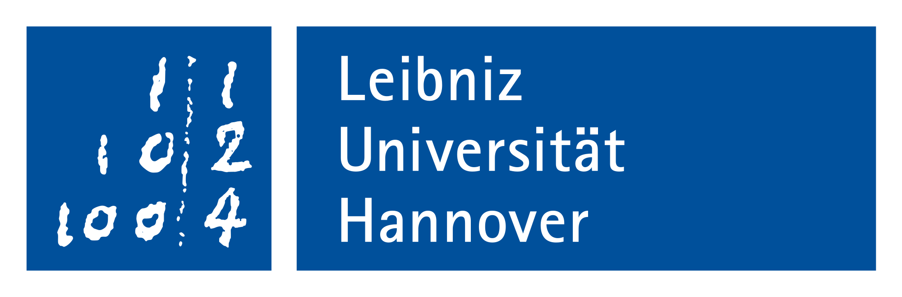

Oct, 2018 — present
Leibniz Universität Hannover, Germany
I have completed my PhD in Theoretical Physics at LUH under the supervision of Olaf Lechtenfeld with funding from DAAD. My thesis, titled "Solutions of Yang--Mills theory in 4 dimensional de Sitter space" is based on 4 published works. I am currently a postdoc at Institut für Theoretische Physik, LUH and am working on Yang--Mills solutions with non-compact gauge groups. I have also attended several conferences and summer schools in and around Germany. The yearly Saalburg Summer Schools have been especially helpful in providing me with a working experience in several research avenues.